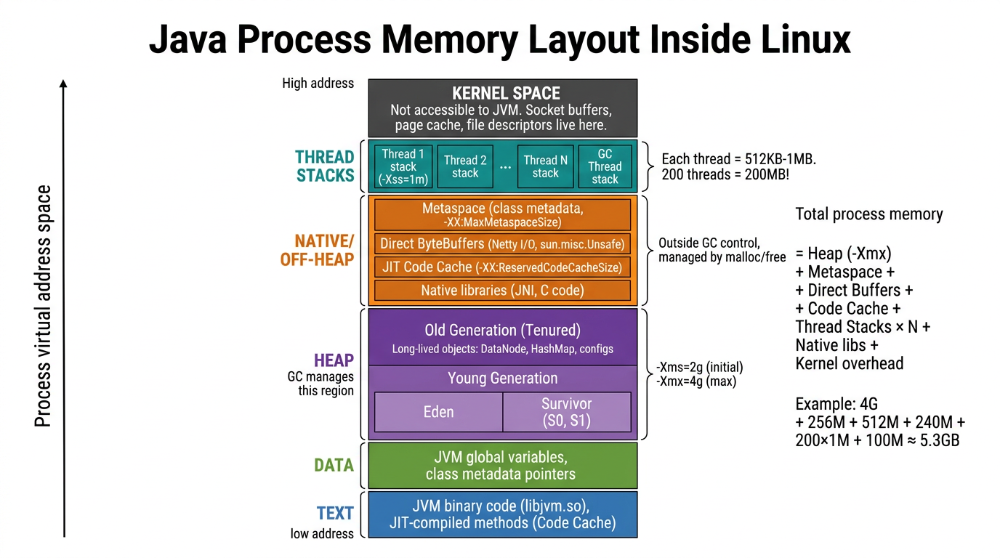
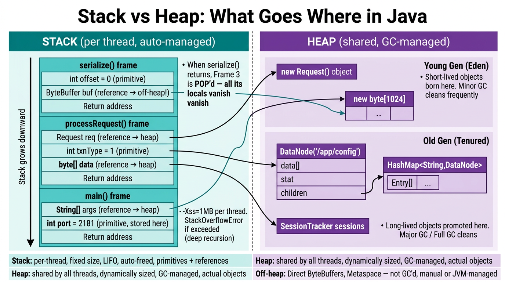
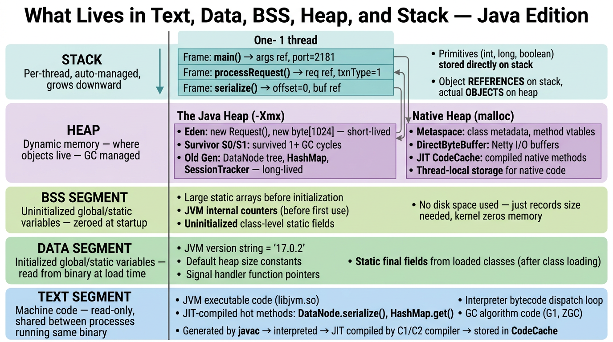
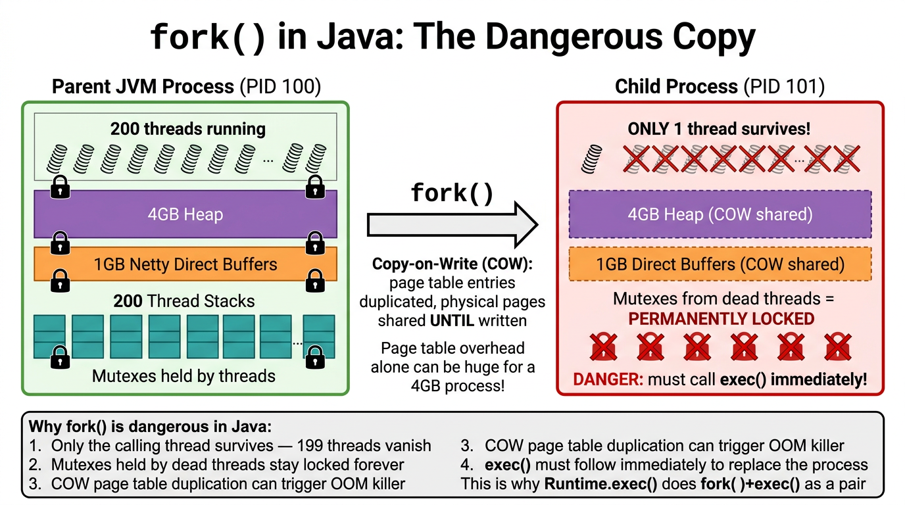
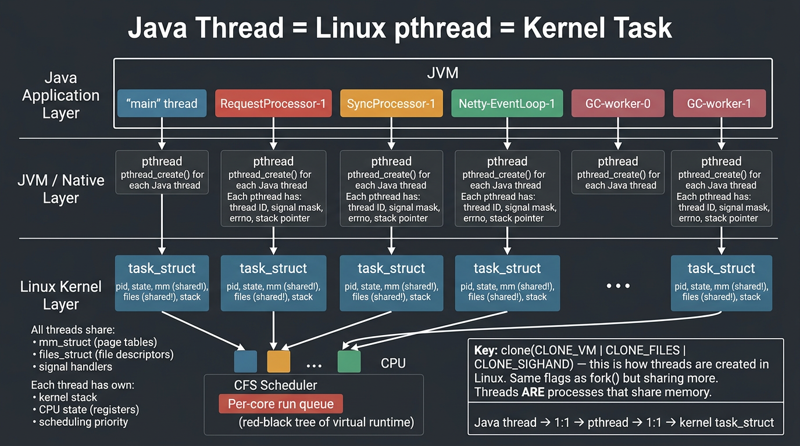
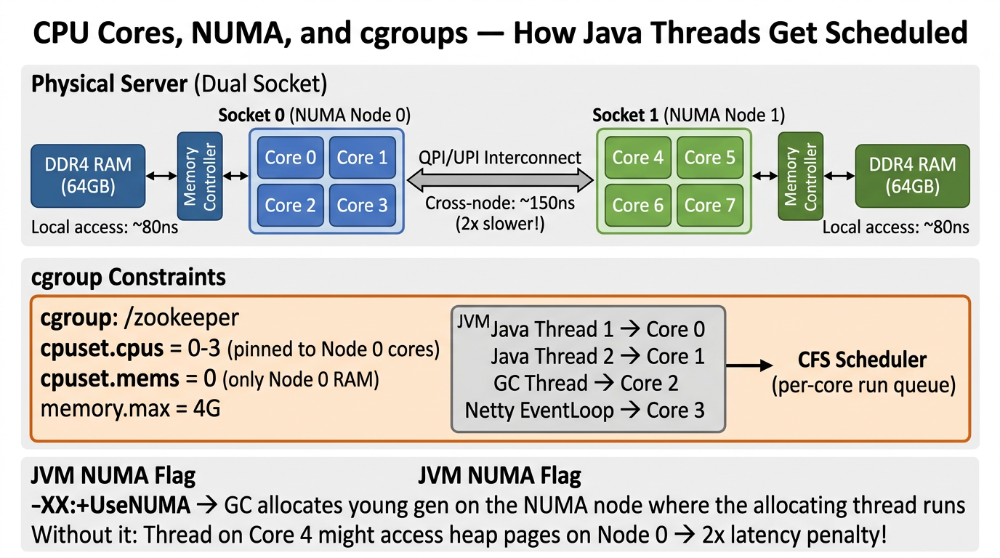
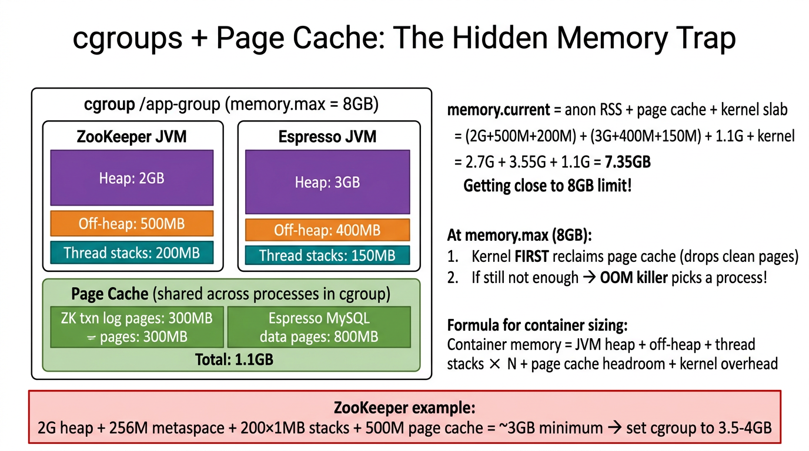
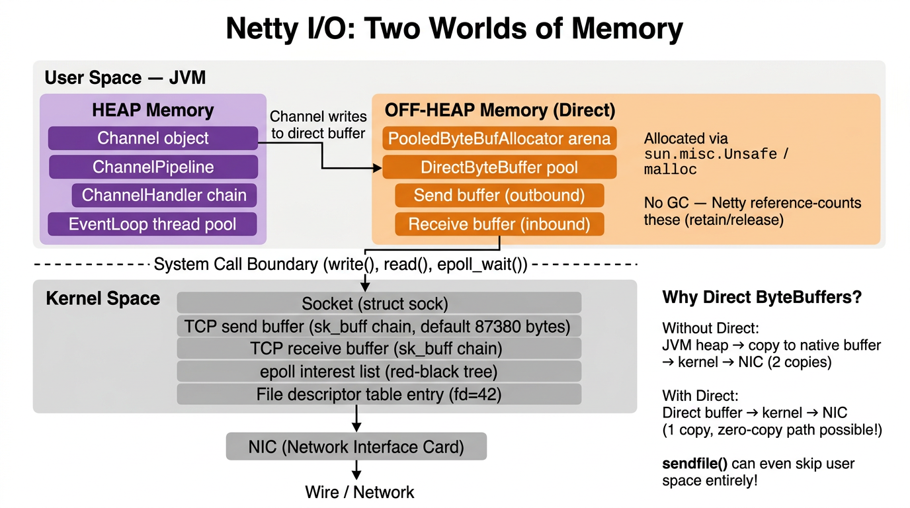
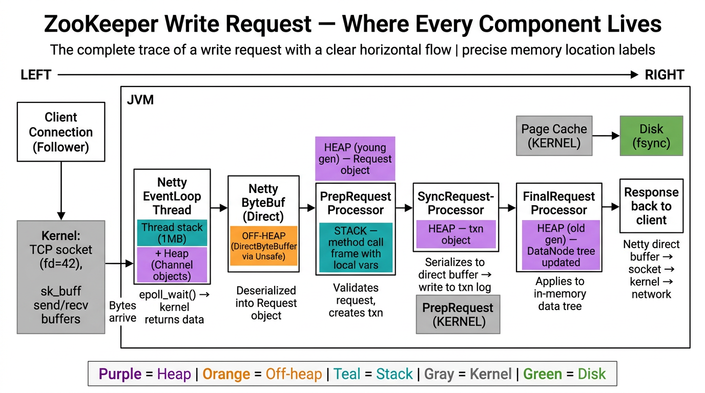
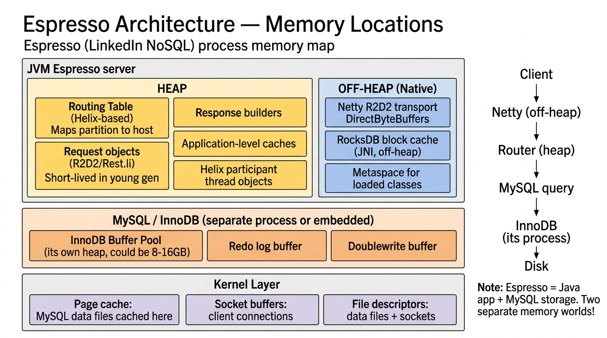

This guide maps every Java component to its exact location in the Linux process memory layout. We trace how ZooKeeper and Espresso (LinkedIn's NoSQL store) use Text, Data, BSS, Heap, Stack, and Kernel memory — with diagrams for every scenario.
A running Java program is a regular Linux process. Its virtual address space has the same segments as any C program (text, data, BSS, heap, stack) — but the JVM carves up the heap into specialized sub-regions and adds large off-heap native allocations.

libjvm.so, the core JVM runtime (interpreter loop, GC algorithms, class loader)In a Java process, “heap” has two meanings:
Java Heap (-Xmx) | Native Heap (malloc) |
|---|---|
Eden: Where new objects are born. new Request(), new byte[1024] — short-livedSurvivor S0/S1: Objects that survived at least 1 minor GC cycle Old Gen (Tenured): Long-lived objects promoted after surviving many GC cycles. DataNode tree, HashMap, SessionTracker |
Metaspace: Class metadata, method vtables (-XX:MaxMetaspaceSize)DirectByteBuffer: Netty I/O buffers, allocated via sun.misc.UnsafeJIT CodeCache: Compiled native methods ( -XX:ReservedCodeCacheSize)Thread-local storage for native (C/C++) code |
| Managed by GC (G1, ZGC, etc.) | Outside GC control. Managed by malloc/free or Netty reference counting |
-Xss)int, long, boolean) are stored directly on the stackStackOverflowErrorsk_buff) for TCP connections# Total process memory (RSS = physical, VSZ = virtual)
ps -p $(pgrep -f ZooKeeper) -o pid,rss,vsz,comm
# Detailed memory map
cat /proc/$(pgrep -f ZooKeeper)/maps | head -40
# Java-specific: heap + non-heap
jcmd $(pgrep -f ZooKeeper) VM.native_memory summary
# JVM flags in effect
jcmd $(pgrep -f ZooKeeper) VM.flags
When ZooKeeper’s RequestProcessor chain calls PrepRequestProcessor.processRequest() → SyncRequestProcessor.processRequest() → FinalRequestProcessor.processRequest(), each call pushes a frame onto that thread’s stack:
┌─────────────────────────────────────┐ ← Stack Pointer (top)
│ serialize() frame │
│ int offset = 0 (primitive) │
│ ByteBuffer buf (ref → off-heap)│
│ return address │
├─────────────────────────────────────┤
│ processRequest() frame │
│ Request req (ref → heap) │
│ int txnType = 1 (primitive) │
│ byte[] data (ref → heap) │
│ return address │
├─────────────────────────────────────┤
│ main() frame │
│ String[] args (ref → heap) │
│ int port = 2181 (primitive) │
│ return address │
└─────────────────────────────────────┘ ← Stack BottomWhen serialize() returns, its frame is popped — all its locals vanish instantly. No GC needed.
Objects created with new live on the heap. References to them are stored on the stack (or in other heap objects):
| What | Where on Heap | Lifetime |
|---|---|---|
new Request() | Young Gen (Eden) | Short — GC’d after processing |
new byte[1024] | Young Gen (Eden) | Short — temporary buffer |
DataNode("/app/config") | Old Gen (Tenured) | Long — lives for process lifetime |
HashMap<String,DataNode> | Old Gen (Tenured) | Long — the ZK data tree |
SessionTracker | Old Gen (Tenured) | Long — tracks all client sessions |
| Property | Stack | Heap | Off-Heap |
|---|---|---|---|
| Scope | Per-thread | Shared by all threads | Shared (manual) |
| Size | Fixed (-Xss), default 1MB | Dynamic (-Xms to -Xmx) | Varies |
| Management | Auto (LIFO push/pop) | GC (G1, ZGC, etc.) | malloc/free, ref-counting |
| Stores | Primitives + references | Actual objects | Direct buffers, class metadata |
| Speed | Very fast (pointer move) | Slower (allocation + GC) | Fast (no GC pause) |
| Overflow | StackOverflowError | OutOfMemoryError | OutOfMemoryError: Direct buffer |

In Chapter 6, we saw how a C program’s variables map to memory segments. Here’s the Java equivalent:
| C Concept | Java Equivalent | Memory Location |
|---|---|---|
Global initialized variable (int primes[] = {2,3,5,7}) | static final int[] PRIMES = {2,3,5,7} | Data segment (constant pool → heap after class load) |
Global uninitialized (char globBuf[65536]) | static byte[] buffer (null until assigned) | BSS (reference is null/zero) |
Local variable (int result) | int result = x * x | Stack (primitive directly) |
Heap allocation (malloc(1024)) | new byte[1024] | Java Heap (Eden → Survivor → Old Gen) |
| Function pointer | Method reference / vtable | Metaspace (off-heap) |
| Text / code | JIT-compiled bytecode | CodeCache (off-heap, executable) |
The JVM adds a layer of indirection. In C, you manage all memory directly. In Java:
.java → .class (bytecode, not native machine code)# See what the JIT compiled
jcmd <pid> Compiler.codecache
# See compiled methods
jcmd <pid> Compiler.queue
# Example output:
# CodeCache: size=245760Kb used=12345Kb max_used=23456Kb free=233415Kb
# bounds [0x00007f1234560000, 0x00007f1234d60000, 0x00007f1249560000]
# total_blobs=4567 nmethods=3456 adapters=789
# compilation: enabled
Java apps almost never call fork() directly. But when ZooKeeper does Runtime.exec("some command"), the JVM internally calls fork() + exec(). Here’s the dangerous sequence:
fork(), the child gets only that one threadexec() replaces the entire address space with a new programRuntime.exec() does fork()+exec() as an atomic pairfork(). Even with COW, the kernel needs to account for the potential memory if all pages were written. The vm.overcommit_memory sysctl controls how aggressive the kernel is about allowing this. Set to 1 (always overcommit) for Redis/large JVM workloads, or 0 (heuristic, default) for conservative behavior.
# Check overcommit settings
cat /proc/sys/vm/overcommit_memory # 0=heuristic, 1=always, 2=never
cat /proc/sys/vm/overcommit_ratio # percentage of RAM (when mode=2)
# See how much memory is committed vs available
cat /proc/meminfo | grep -i commit
# CommitLimit: 8388608 kB
# Committed_AS: 5242880 kB ← total memory "promised" to processes
# Check for OOM kills
dmesg | grep -i "oom\|killed process"
# Safer alternative to fork() in modern Java
# ProcessBuilder uses posix_spawn() on newer JVMs (Java 9+)
# which avoids the full fork() + address space duplication
Every Java thread maps directly to a native OS thread:
Java Thread ("RequestProcessor-1")
↓ [Thread.start() calls pthread_create()]
Native pthread
↓ [clone(CLONE_VM | CLONE_FILES | CLONE_SIGHAND)]
Linux kernel task_struct| Shared (all threads see same data) | Per-Thread (each thread has its own) |
|---|---|
mm_struct — page tables (same virtual address space)files_struct — file descriptor tableSignal handlers Java Heap (all objects) Static/class variables Metaspace |
Thread stack (-Xss)Kernel stack (for system calls) CPU register state Scheduling priority / nice value Thread-local storage ( ThreadLocal<T>)errno value
|
clone() is the same system call that fork() uses, but with different flags:
| Operation | System Call | What’s Shared |
|---|---|---|
fork() | clone(SIGCHLD) | Nothing — full copy (COW) |
pthread_create() | clone(CLONE_VM | CLONE_FILES | CLONE_SIGHAND | CLONE_THREAD) | Memory, files, signals, PID group |
Threads ARE processes that share memory. In Linux, there is no fundamental distinction — both are task_struct entries. The clone() flags determine how much is shared.
# See all threads of a Java process
ps -T -p $(pgrep -f ZooKeeper) | head -20
# Or via /proc
ls /proc/$(pgrep -f ZooKeeper)/task/
# Thread count
cat /proc/$(pgrep -f ZooKeeper)/status | grep Threads
# Threads: 247
# See which core each thread is on
ps -T -p $(pgrep -f ZooKeeper) -o spid,psr,pcpu,comm | head -20
# SPID PSR %CPU COMMAND
# 12345 2 0.3 java
# 12346 0 5.1 GC-Thread-0
# 12347 1 4.8 GC-Thread-1
# Pin a thread to specific cores
taskset -p 0x0F 12345 # cores 0-3 only
The Linux CFS (Completely Fair Scheduler) maintains a per-core run queue implemented as a red-black tree sorted by virtual runtime. Each Java thread is a kernel-schedulable entity (a task_struct). The scheduler picks which core runs which thread based on fairness.
taskset or sched_setaffinity()SyncRequestProcessor thread (the one flushing to disk) to a specific core to avoid cache thrashingOn a dual-socket server (common for ZooKeeper/Espresso production boxes), each socket has its own memory controller:
| Access Type | Latency | Example |
|---|---|---|
| Local (same NUMA node) | ~80ns | Core 0 accessing RAM on Socket 0 |
| Remote (cross-node via QPI/UPI) | ~150ns | Core 0 accessing RAM on Socket 1 |
Almost 2x slower for cross-node access!
The JVM’s -XX:+UseNUMA flag tells the GC to allocate young gen on the NUMA node where the allocating thread runs. Without it, a thread on core 4 (node 1) might be accessing heap pages physically located on node 0, paying the cross-node penalty on every object access.
# Check NUMA topology
numactl --hardware
# available: 2 nodes (0-1)
# node 0 cpus: 0 1 2 3 4 5 6 7
# node 0 size: 65536 MB
# node 1 cpus: 8 9 10 11 12 13 14 15
# node 1 size: 65536 MB
# node distances:
# node 0 1
# 0: 10 21 ← 21 = cross-node, 2.1x the latency
# 1: 21 10
# Check which NUMA node a process uses
numastat -p $(pgrep -f ZooKeeper)
# Run JVM bound to a NUMA node
numactl --cpunodebind=0 --membind=0 java -jar zookeeper.jarcgroups (control groups) limit how much CPU, memory, and I/O a process group can use. In Kubernetes, every pod gets its own cgroup.
| cgroup Parameter | What It Controls | Example |
|---|---|---|
cpuset.cpus | Which CPU cores are allowed | 0-3 (only cores 0–3) |
cpuset.mems | Which NUMA nodes for memory | 0 (only node 0 RAM) |
memory.max | Hard memory limit | 4294967296 (4GB) |
memory.current | Current usage | Read-only, shows actual usage |
cpu.max | CPU time limit (quota/period) | 200000 100000 (2 cores worth) |
# See cgroup of a process
cat /proc/$(pgrep -f ZooKeeper)/cgroup
# See memory limit
cat /sys/fs/cgroup/memory/<cgroup-path>/memory.max
# See current usage
cat /sys/fs/cgroup/memory/<cgroup-path>/memory.current
# See CPU pinning
cat /sys/fs/cgroup/cpuset/<cgroup-path>/cpuset.cpus
The kernel tracks memory.current for a cgroup as:
This is one of the most misunderstood aspects of cgroups. Page cache (disk cache) of multiple processes is shared and counts against the same cgroup memory limit.
memory.current| Component | ZooKeeper Example | Espresso Example |
|---|---|---|
JVM Heap (-Xmx) | 2GB | 4GB |
| Metaspace | 256MB | 512MB |
| Thread Stacks | 200 × 1MB = 200MB | 300 × 1MB = 300MB |
| Direct Buffers | 128MB | 512MB |
| Page Cache headroom | ~500MB (txn logs) | ~1GB (MySQL data) |
| Kernel overhead | ~100MB | ~200MB |
| Total minimum | ~3.2GB | ~6.5GB |
| Recommended cgroup | 3.5–4GB | 7–8GB |
memory.max = -Xmx. If your heap is 4GB and your cgroup limit is 4GB, you’re guaranteed to get OOM killed — there’s zero room for Metaspace, stacks, direct buffers, and page cache!
# Monitor cgroup memory breakdown
cat /sys/fs/cgroup/memory/<path>/memory.stat
# anon 2147483648 ← heap + stacks (anonymous pages)
# file 536870912 ← page cache (file-backed pages)
# kernel_stack 8388608 ← kernel stacks for threads
# sock 1048576 ← socket buffer memory
# slab 4194304 ← kernel slab allocator
# Watch for OOM events
cat /sys/fs/cgroup/memory/<path>/memory.events
# low 0
# high 142
# max 3 ← hit the limit 3 times!
# oom 0
# oom_kill 0 ← nobody killed yet, but close
When performing network I/O, data must eventually reach the kernel’s socket buffers. The path depends on buffer type:
| Buffer Type | I/O Path | Copies |
|---|---|---|
Heap byte[] | JVM heap → copy to native temp buffer → kernel → NIC | 2 copies |
Direct ByteBuffer | Direct buffer → kernel → NIC | 1 copy |
sendfile() | Page cache → NIC (DMA) | 0 copies (zero-copy!) |
The extra copy for heap buffers exists because the GC can move objects in memory during compaction. The kernel needs a stable address for its DMA transfer. Direct buffers are pinned at a fixed native address.
malloc/free per request)ByteBuf has a reference count. retain() increments, release() decrements. When it hits 0, memory is returned to the poolrelease() causes a native memory leak that won’t show up in Java heap dumps!For each TCP connection, the kernel maintains:
struct sock — socket state (TCP state machine, window size, RTT)sk_buff chain for send buffer (default ~87KB, tunable via net.core.wmem_default)sk_buff chain for receive buffer (default ~87KB, tunable via net.core.rmem_default)epoll interest list entry (red-black tree in kernel)# Monitor Netty direct memory
jcmd <pid> VM.native_memory summary | grep -A3 "Internal"
# or check MBean:
# java.nio:type=BufferPool,name=direct
# Count: 42
# MemoryUsed: 134217728 ← 128MB of direct buffers
# TotalCapacity: 134217728
# See kernel socket buffer sizes
sysctl net.core.rmem_default net.core.wmem_default
# net.core.rmem_default = 87380
# net.core.wmem_default = 87380
# Monitor socket memory per connection
ss -tm | head -10
/app/configWhen a ZooKeeper leader processes a write request, data touches every memory region:
| Step | Component | Memory Location | Why There |
|---|---|---|---|
| 1 | Client TCP connection arrives | KERNEL Socket fd, sk_buff recv buffer |
Kernel manages TCP state and buffers |
| 2 | Netty EventLoop picks it up (epoll_wait) |
STACK EventLoop thread stack HEAP Channel objects |
Thread waits in kernel, Channel metadata on heap |
| 3 | Bytes read into Netty buffer | OFF-HEAP DirectByteBuffer | Avoids heap→native copy during read() |
| 4 | Deserialized into Request object | HEAP Young Gen (Eden) | Short-lived Java object, born in Eden |
| 5 | PrepRequestProcessor validates | STACK Method locals, return addr HEAP Request + txn objects |
Call frame on stack, objects on heap |
| 6 | SyncRequestProcessor serializes to txn log | OFF-HEAP → PAGE CACHE → Disk (fsync) | Direct buffer → kernel page cache → physical disk |
| 7 | FinalRequestProcessor applies to data tree | HEAP Old Gen (DataNode tree updated) | Long-lived in-memory tree, lives in tenured space |
| 8 | Response sent back | OFF-HEAP → KERNEL socket → network | Netty direct buffer → kernel TCP send buffer → NIC |
| Component | Location | Why |
|---|---|---|
DataNode object for /app/config | JVM heap (old gen) | Long-lived Java object |
| StatPersisted (zxid, version) | JVM heap | Attached to DataNode |
| Request object being processed | JVM heap (young gen) | Short-lived, GC’d after processing |
| PrepRequestProcessor call frame | Thread stack | Method locals, return address |
| Serialized bytes of txn log entry | Off-heap (direct buffer) before flush | NIO channel write buffer |
| Txn log file content after fsync | Page cache (kernel) | File-backed, counts in cgroup |
| Client TCP connection from follower | Kernel FD table + socket buffers | Kernel manages TCP state |
| Netty EventLoop polling epoll | Thread stack + kernel epoll fd | Thread waits in kernel |
JIT-compiled hot path of serialize() | Code cache (native memory) | JVM compiles hot methods |

Espresso is LinkedIn’s NoSQL store built on MySQL + Helix. It has two separate memory worlds:
| Component | Memory Region |
|---|---|
| Routing Table (Helix-based, maps partition → host) | Heap (old gen) |
| Request objects (R2D2/Rest.li) | Heap (young gen, short-lived) |
| Response builders | Heap (young gen) |
| Application-level caches | Heap (old gen) |
| Helix participant thread objects | Heap + stacks |
| Netty R2D2 transport buffers | Off-heap (DirectByteBuffer) |
| RocksDB block cache (via JNI) | Off-heap (native memory) |
| Metaspace for loaded classes | Off-heap |
| Component | Memory Region |
|---|---|
| InnoDB Buffer Pool (could be 8–16GB) | MySQL process heap |
| Redo log buffer | MySQL process heap |
| Doublewrite buffer | MySQL process heap |
| MySQL data files cached | Kernel page cache |
The request flow: Client → Netty (off-heap) → Router (heap) → MySQL query → InnoDB (its process) → Disk
# Overview: RSS, VSZ, threads
ps -p <pid> -o pid,rss,vsz,nlwp,comm
# PID RSS VSZ NLWP COMMAND
# 12345 3145728 8388608 247 java
# Detailed memory map (shows text, heap, stack, mmap regions)
pmap -x <pid> | head -40
# or
cat /proc/<pid>/maps | head -40
# smaps for detailed per-region breakdown
cat /proc/<pid>/smaps_rollup
# Rss: 3145728 kB
# Pss: 3100000 kB ← proportional share (accounts for shared pages)
# Shared_Clean: 45728 kB ← shared read-only (text segment, shared libs)
# Private_Dirty: 3000000 kB ← heap, stacks, modified data
# NUMA distribution
numastat -p <pid>
# Per-node process memory usage (in MBs)
# Node 0 Node 1 Total
# Heap 2048 512 2560
# Stack 50 12 62# Native Memory Tracking (must start JVM with -XX:NativeMemoryTracking=summary)
jcmd <pid> VM.native_memory summary
# Total: reserved=6442450944, committed=5368709120
# - Java Heap (reserved=4294967296, committed=4294967296)
# - Class (reserved=1073741824, committed=268435456) ← Metaspace
# - Thread (reserved=262144000, committed=262144000) ← 250 threads
# - Code (reserved=251658240, committed=50331648) ← JIT CodeCache
# - GC (reserved=214748364, committed=214748364)
# - Internal (reserved=134217728, committed=134217728) ← Direct buffers
# Heap breakdown
jmap -heap <pid>
# Heap Configuration:
# MaxHeapSize = 4294967296 (4096.0MB)
# NewSize = 1073741824 (1024.0MB)
# OldSize = 3221225472 (3072.0MB)
# SurvivorRatio = 8
# GC activity
jstat -gcutil <pid> 1000
# S0 S1 E O M CCS YGC YGCT FGC FGCT
# 0.00 45.23 67.89 34.56 97.12 94.56 142 1.234 3 0.567
# Thread dump (see what each thread is doing)
jcmd <pid> Thread.print# Find the cgroup of a Java process
cat /proc/<pid>/cgroup
# 0::/kubepods/pod-abc123/container-xyz
# Memory usage and limit
cat /sys/fs/cgroup/kubepods/pod-abc123/container-xyz/memory.current
cat /sys/fs/cgroup/kubepods/pod-abc123/container-xyz/memory.max
# Detailed memory stats (anon, file, kernel_stack, sock, slab)
cat /sys/fs/cgroup/kubepods/pod-abc123/container-xyz/memory.stat
# CPU assignment
cat /sys/fs/cgroup/kubepods/pod-abc123/container-xyz/cpuset.cpus
# 0-3| Thing | Segment | Managed By | Size Control |
|---|---|---|---|
| JVM binary (libjvm.so) | TEXT | OS loader | Fixed at compile time |
| JIT-compiled methods | CODE CACHE | JVM JIT | -XX:ReservedCodeCacheSize |
| JVM constants, version strings | DATA | OS loader | Fixed |
| Uninitialized static arrays | BSS | OS (zeroed) | Fixed |
Java objects (new) | JAVA HEAP | GC | -Xms / -Xmx |
| Young Gen (Eden + Survivors) | JAVA HEAP | GC | -Xmn or auto |
| Old Gen (Tenured) | JAVA HEAP | GC | -Xmx minus young |
| Class metadata (vtables) | METASPACE | JVM classloader | -XX:MaxMetaspaceSize |
| Direct ByteBuffers (Netty) | OFF-HEAP | Netty ref-count | -XX:MaxDirectMemorySize |
| Thread stack (per thread) | STACK | Auto (LIFO) | -Xss (default 1MB) |
| Method local primitives | STACK | Auto | Part of stack frame |
| Object references (local) | STACK | Auto | Part of stack frame |
| Socket state (TCP) | KERNEL | Kernel | sysctl net.core.* |
| Page cache (file I/O) | KERNEL | Kernel | Reclaimed under pressure |
| File descriptors | KERNEL | Kernel | ulimit -n, file-max |
| epoll interest list | KERNEL | Kernel | fd limit |
Java Memory Architecture Deep Dive — Built with diagrams for every scenario